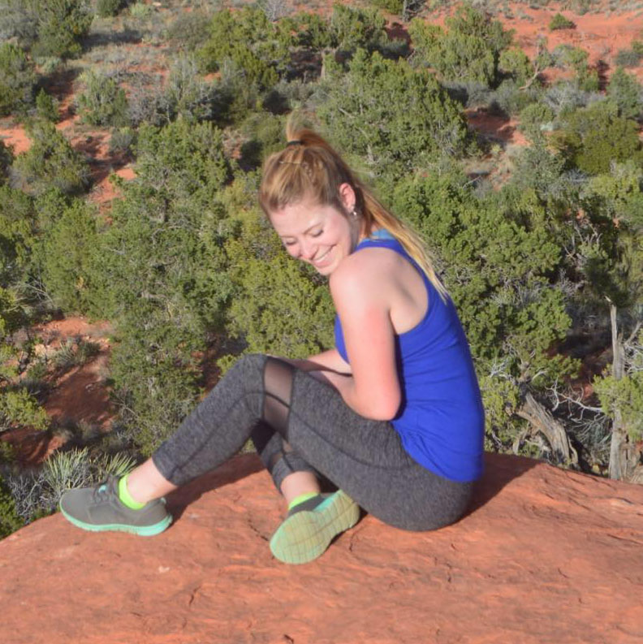
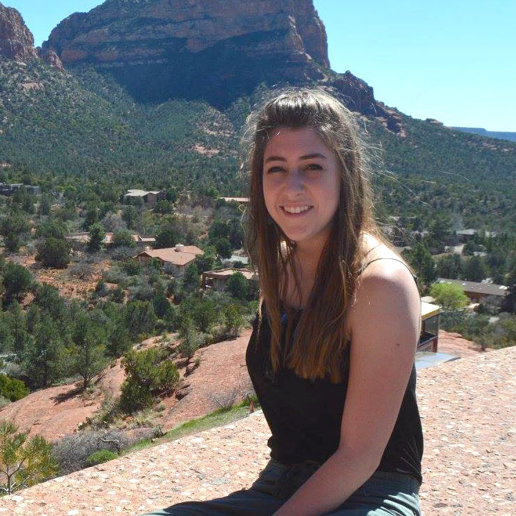
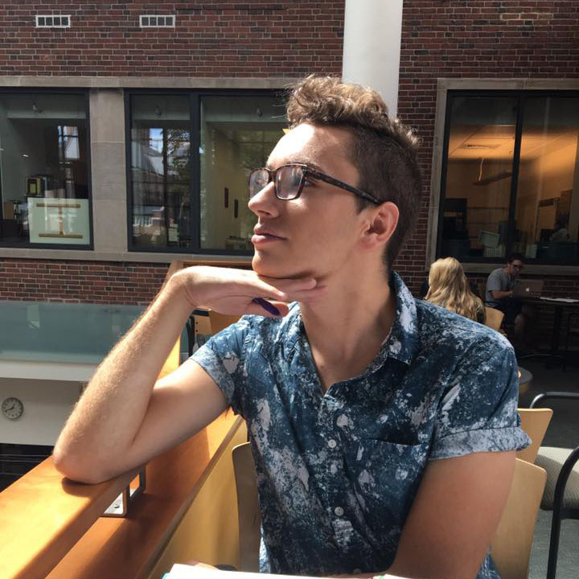

The Morning Brew
Organic Coffee Beans
About Us:
The Morning Brew comes from organic coffee farms in Columbia. This means no synthetic fertilizers or chemicals making for cleaner beans, air, and water. For you, our organic coffee beans are richer in healthy antixoidants. For the planet, the coffee farms emit far less carbon than chemical farms helping to combat climate change. With The Morning Brew, you are helping yourself and the planet one cup of coffee at a time!
Products

The Light Roast
-

-
The Morning Brew's Light Roast is embodied with a sunflower. The coffee is light brown in color, with a light body and no oil on the surface of the beans. This light roast has a toasted grain taste and pronounced acidity. The origin flavors of the bean, Columbian, are retained to a greater extent than in darker roasted coffees. Light roasts also retain most of the caffeine from the coffee bean. Light roasted beans generally reach an internal temperature of 180°C – 205°C (356°F – 401°F). At or around 205°C, the beans pop or crack and expand in size. This is known as the “first crack” (for the “second crack,” see below). So a light roast generally means a coffee that has not been roasted beyond the first crack. The Morning Brew's Light Roast tastes remarkable with breakfast foods like oatmeal and wheat toast as well as desserts like oatmeal raisin cookies and coffee cake.
The Medium Roast
-

-
The Morning Brew's Medium Roast is embodied with a branch of lavender. The coffee is medium brown in color with more body than light roasts. Like the lighter roasts, they have no oil on the bean surfaces. However, medium roasts lack the grainy taste of the light roasts, exhibiting more balanced flavor, aroma, and acidity. Caffeine is somewhat decreased, but there is more caffeine than in darker roasts. Medium roasts reach internal temperatures between 210°C (410°F) and 220°C (428°F) — between the end of the first crack and just before the beginning of the second crack. The Morning Brew's Medium Roast goes great with some chocolate cake and coffee cake as well as eggs and bacon.
The Dark Roast
-

-
The Morning Brew's Dark Roast is embodied with a rose. The coffee has a richer, darker color with some oil beginning to show on the surface of the beans. A medium-dark roast has a heavy body in comparison with the lighter or medium roasts. The beans are roasted to the beginning or middle of the second crack — about 225°C (437°F) or 230°C (446°F). The flavors and aromas of the roasting process become noticeable, and the taste of the coffee may be somewhat spicy. The Morning Brew's Dark Roast tastes great with desserts like dark chocolate and brownies.
Customer Reviews
-

-
Ayanah
Whenever I first wake up, all I want is a sip of The Morning Brew! I bought it for my mom for Christmas, I would recommend it to all my friends. 11/10!!!
-

-
Marisa
I really hate coffee, but The Morning Brew is too tasty to not love! With a splash of milk and a dash of sugar it is just creamy enough for non-coffee lovers to enjoy.
-

-
Dan
I live off coffee! I was spending so much money and time on Starbucks coffee every day but when I started drinking The Morning Brew, my life was changed... it is OUTSTANDING! It is so easy to grind the beans the brew the coffee that I do it when I get ready in the morning!